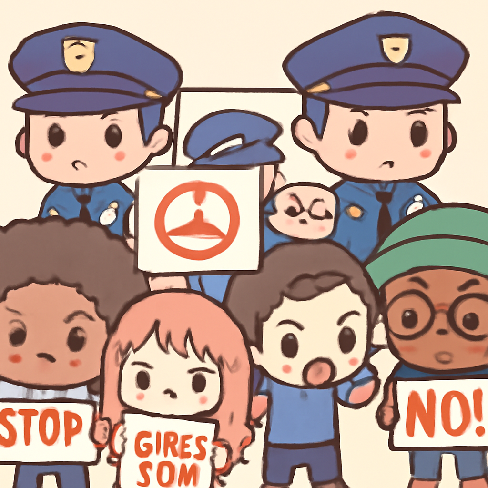

其一 · 美國華府 · 最高法院支持出生公民權
美國最高法院支持出生公民權，打擊特朗普移民政策。
在美國華府，最高法院近日裁定支持出生公民權，這對特朗普的移民政策來說可說是一記重擊。這項裁決不僅受到民權團體的歡迎，也可能影響未來的移民政策，讓許多人鬆了一口氣，畢竟不想在國籍問題上被當成足球踢來踢去。
🔗 原始新聞 ↗
2026-07-01 · 以古觀今，以笑抗愁
美國最高法院支持出生公民權，打擊特朗普移民政策。
在美國華府，最高法院近日裁定支持出生公民權，這對特朗普的移民政策來說可說是一記重擊。這項裁決不僅受到民權團體的歡迎，也可能影響未來的移民政策，讓許多人鬆了一口氣，畢竟不想在國籍問題上被當成足球踢來踢去。
🔗 原始新聞 ↗
委內瑞拉地震後，一名三歲小孩成功被救出。
在委內瑞拉拉圭亞，經歷了六天的驚心動魄後，三歲小孩終於在瓦礫中被救出，這段影片讓人心頭一暖，救援隊伍也忍不住歡呼。這場地震造成的傷亡人數仍在上升，讓人不禁想問，為什麼地震總愛在最不方便的時候來搶風頭。
🔗 原始新聞 ↗
巴基斯坦一補習班屋頂坍塌，14名兒童不幸遇難。
在巴基斯坦拉合爾，補習班的屋頂近日不幸坍塌，造成14名兒童喪命，這讓整個社區陷入悲痛之中。當局已經逮捕了兩名涉事人員，這事件引發了對建築安全的再次關注，誰還敢在補習班裡安心學習呢？
🔗 原始新聞 ↗
希臘塞薩洛尼基附近發生致命野火，已造成兩人遇難。
在希臘塞薩洛尼基附近，野火近日變得愈發嚴重，已經造成至少兩人喪生，超過100名消防員正在奮力撲滅火焰。這場災難讓人想起氣候變化的威脅，也讓人不禁感慨，火焰的熱情真的是太過火了。
🔗 原始新聞 ↗
南非爆發反移民抗議活動，警方加強戒備。

在南非約翰尼斯堡，數千名反移民抗議者走上街頭，警方則在周圍加強戒備，情勢緊張。許多外籍人士已經提前撤離，這場抗議活動引發了對社會凝聚力的擔憂，畢竟一個國家如果連人都不想住下來，那還能叫家嗎？
🔗 原始新聞 ↗